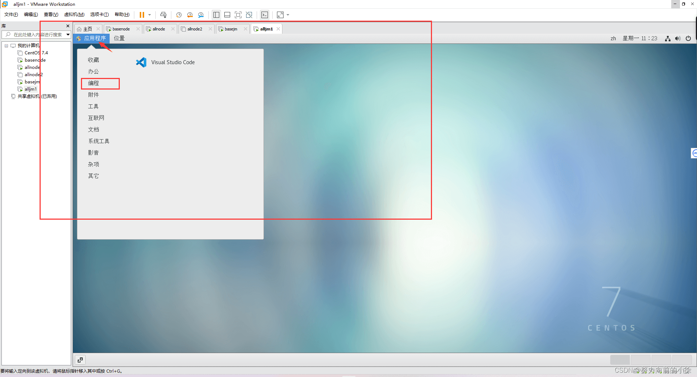
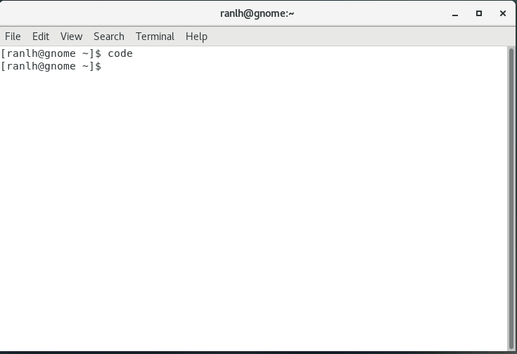
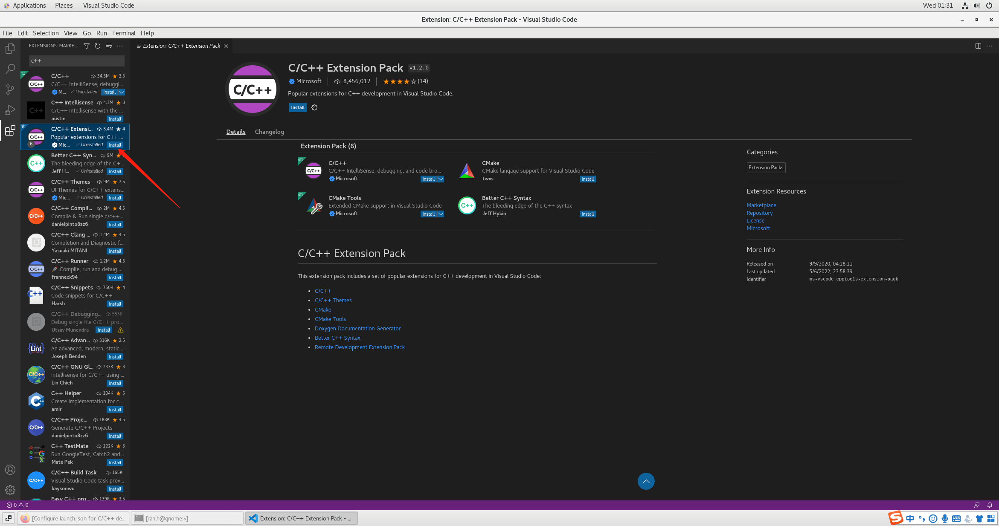
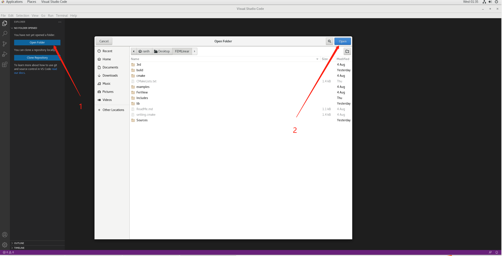
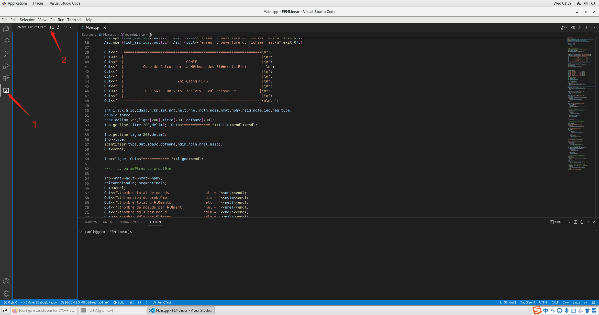
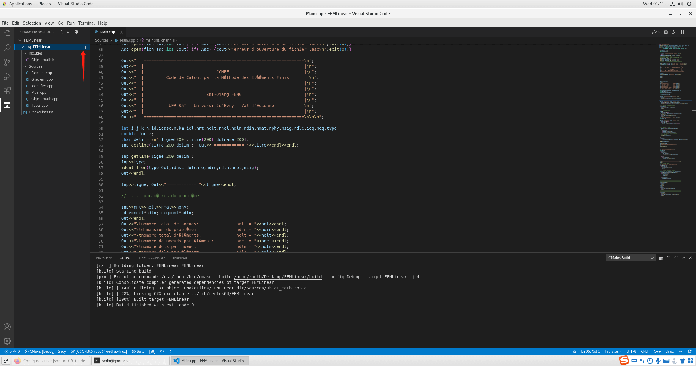
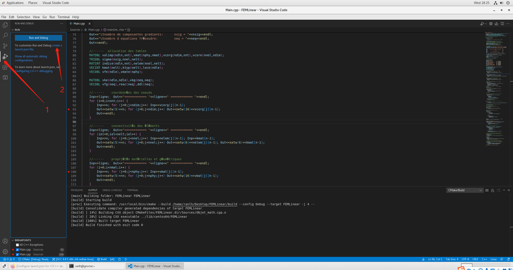
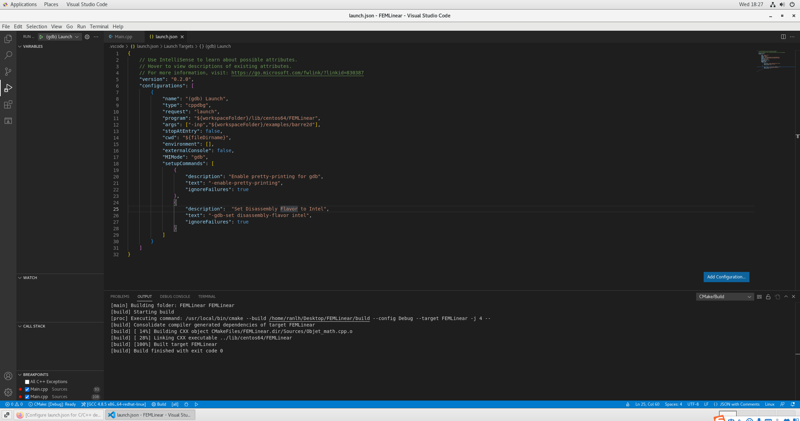
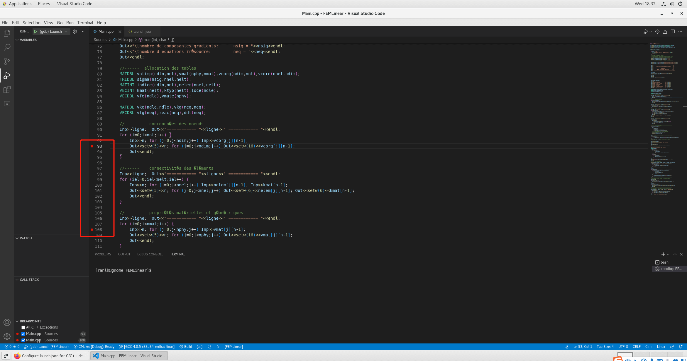
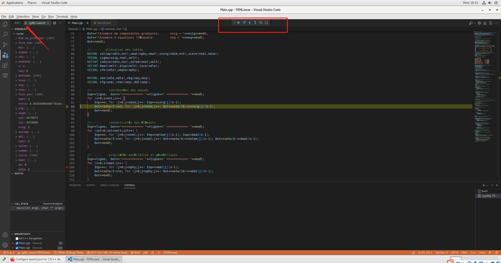

Centos7系统用 VSCode 编译和调试 C++ 源码
安装 CMake
-
安装gcc等依赖程序
yum install -y gcc gcc-c++ wget -
获取CMake源码包
wget https://cmake.org/files/v3.23/cmake-3.23.2.tar.gz -
解压并安装
1
2
3
4tar -xzvf cmake-3.23.2.tar.gz
cd cmake-3.23.2
./bootstrap
gmake && install
安装 VSCode
-
yum 命令安装
1
2
3
4
5
6rpm --import https://packages.microsoft.com/keys/microsoft.asc
sh -c 'echo -e "[code]\nname=Visual Studio Code\n
baseurl=https://packages.microsoft.com/yumrepos/vscode\nenabled=1\ngpgcheck=1\n
gpgkey=https://packages.microsoft.com/keys/microsoft.asc" > /etc/yum.repos.d/vscode.repo'
yum check-update
yum install code -
下载 rpm 包安装
复制链接下载最新 rpm 包：https://update.code.visualstudio.com/1.70.1/linux-rpm-x64/stable
安装：rpm -ivh code-1.70.1-1660113182.el7.x86_64.rpm
启动 VSCode：
- 通过桌面程序启动
 - 通过终端启动
 - 点击左侧插件菜单栏搜索C++安装扩展包

将源码通过 CMake 编译
- 打开源码文件夹
 - 点击 cmake 菜单栏，点击config project
 - config完成后会生成如下目录、再点击如图build生成二进制文件

开始调试
-
点击调试菜单、生成launch.json文件
 -
配置调试参数
1
2
3
4
5
6
7
8
9
10
11
12
13
14
15
16
17
18
19
20
21
22
23
24
25
26
27"configurations": [
{
"name": "(gdb) Launch",
"type": "cppdbg",
"request": "launch",
//仅需修改以下两行
"program": "${workspaceFolder}/lib/centos64/FEMLinear", //程序的路径
"args": ["-inp","${workspaceFolder}/examples/barre2d"], //启动参数
"stopAtEntry": false,
"cwd": "${fileDirname}",
"environment": [],
"externalConsole": false,
"MIMode": "gdb",
"setupCommands": [
{
"description": "Enable pretty-printing for gdb",
"text": "-enable-pretty-printing",
"ignoreFailures": true
},
{
"description": "Set Disassembly Flavor to Intel",
"text": "-gdb-set disassembly-flavor intel",
"ignoreFailures": true
}
]
}
] -
设置断点，启动调试

